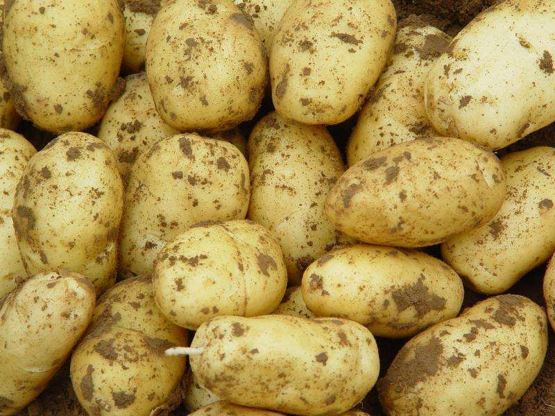
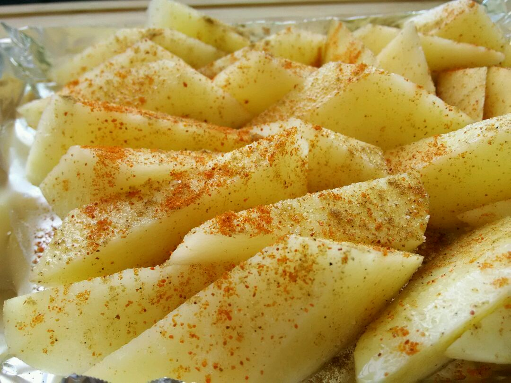

众所周知，土豆，是一种食物，而它作为食物，一种偏碱性的食物（某度百科），是具有导体的属性的
众所周知，计算机是由二进制来进行驱动，一般用电压的大小来表示二进制驱动，比如3.75v，大于3.75v标记为1，小于标记为0，这个是看计算机厂商和计算机类别来规定的
而土豆，它作为一种导体，我们就可以使用两种类型的土豆，来表示二进制
最好的解决方法，就是使用带皮的土豆和不带皮的表示

带皮，输入的电压会较大损耗，电压较小，令它为0
无皮，输入的电压会较小损耗，电压较大，令它为1那么，理论上，将土豆进行有皮与去皮的加工，再用导线串联，就可以搭建服务器
计算机中一个bit比特位为八个字节，而一个土豆只能表达一个字节单位，所以把土豆切片加工，大约一个土豆组成一个bit比特位
一个土豆大约为250克，而250克才能组成一个bit位，与世界上第一台微型计算机的CPU 「inter 4004」，它的频率为108k赫兹的4位处理器
inter4004的频率为108k赫兹，也就是108×1024=110592 个bit位，也就是110592个土豆，一个土豆约250克，110592×250=27,648,000克的土豆，等于27648千克土豆，等于27.648吨的土豆才能组成一个在1971年的处理器
而土豆的平均价格在2块钱左右，光是这些土豆，就需要55296元人民币，而5万，你可以买到一套不错的服务器配置，所以，在这个方面来看，土豆价格>服务器，所以，育碧花了不少钱用土豆给服务器扩容，快说__ __ 育碧
而现在手机处理器高通骁龙888大核为2.84gb赫兹，也就是3049426789bit比特位，换算成土豆也就是76235669511211克土豆，也就是762356695公斤土豆，也就是762356.695吨的土豆，价格是152471339329人民币（14位），也就是15万亿多人民币
快说__ __ 育碧
纯整活向，勿当真，再说当真也没那个钱买土豆，就算有，土豆搭建好了一批就会坏一批